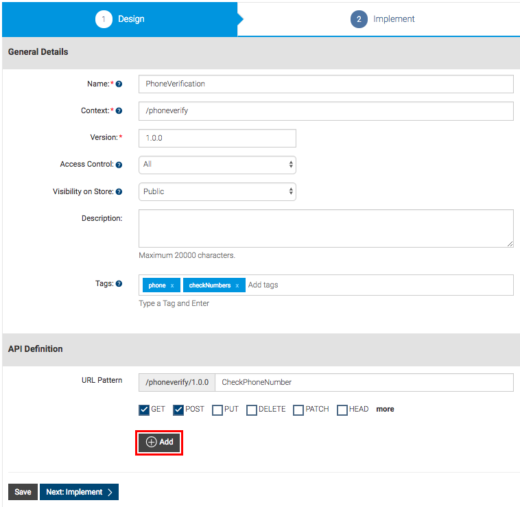

Create and Publish an API¶
API creation is the process of linking an existing backend API implementation to the API Publisher so that you can manage and monitor the API's lifecycle , documentation, security, community, and subscriptions. Alternatively, you can provide the API implementation in-line in the API Publisher itself.
Note
Click the following topics for a description of the concepts that you need to know when creating an API:
- Sign in to the WSO2 API Publisher.
https://<hostname>:9443/publisher(e.g.,https://localhost:9443/publisher). Use admin as the username and password. -
Close the interactive tutorial that starts automatically if you are a first-time user, and click ADD NEW API .
Tip
You can go back to the interactive tutorial at a later stage by clicking API Walkthrough on the top right corner.

-
Click Design a New REST API and click Start Creating .

-
Give the information in the table below and click Add to add the resource.
Field Sample value Name PhoneVerification Context
/phoneverifyThe API context is used by the Gateway to identify the API. Therefore, the API context must be unique. This context is the API's root context when invoking the API through the Gateway.
Tip
You can define the API's version as a parameter of its context by adding the
{version}into the context. For example,{version}/phoneverify. The API Manager assigns the actual version of the API to the{version}parameter internally. For example,https://localhost:8243/1.0.0/phoneverify. Note that the version appears before the context, allowing you to group your APIs based on the versions.Version 1.0.0 Access Control All Visibility on Store Public Tags phone, checkNumbers
Tip
Tags can be used to filter out APIs matching certain search criteria. It is recommended that you add tags that explain the functionality and purpose of the API as subscribers can search for APIs based on the tags.
Resources URL pattern
CheckPhoneNumberRequest types GET, POSTThe selection of the HTTP method should match the actual backend resource. For example, if the actual backend contains the GET method to retrieve details of a phone number, that resource should match a GET resource type with a proper context.

For more information on URL patterns, see API Resources .
-
After you add the resource, click it's
GETmethod to expand it. Update the value for Produces asapplication/xmland the value for Consumes asapplication/json.Note
In the resource definition, you define the MIME types. Consumes refers to the MIME type of request accepted by the backend service and Produces refers to the MIME type of response produced by the backend service that you define as the endpoint of the API.
-
Next, add the following parameters. You use these parameters to invoke the API using the integrated API Console, which is explained in later tutorials.
Parameter Name Description Parameter Type Data Type Required PhoneNumberGive the phone number to be validated query string True LicenseKeyGive the license key as 0 for testing purpose query string True 
HTTP Post
By design, the HTTP POST method specifies that the web server accepts data enclosed within the body of the request. Therefore, when adding a POST method, API Manager adds the payload parameter to the POST method by default.
Note
Import or Edit API definition

To import an existing swagger definition from a file or a URL, click Import . Click Edit Source to manually edit the API swagger definition.
-
Once done, click Next: Implement > . Alternatively, click Save to save all the changes made to the API. You can come back later to edit it further by selecting the API and clicking Edit . For details about the states of the API, see Manage the API Lifecycle .
The following parameter types can be defined according to the resource parameters you add.
Parameter Type Description queryContains the fields added as part of the invocation URL that holds the data to be used to call the backend service. headerContains the case-sensitive names followed by a colon (:) and then by its value that carries additional information with the request which defines the operating parameters of the transaction. formDataContains a property list of attribute names and values that are included in the body of the message. bodyAn arbitrary amount of data of any type sent with a POST message You can use the following data type categories, supported by swagger .
-
Click the Managed API option.

-
The Implement tab opens. Enter the information in the table below.
Field Sample value Endpoint type HTTP/REST endpoint
Load balanced and fail over endpoints
The load balanced and failover endpoint types are not selected in this example. For details about these endpoint types, see Working with Endpoints and ESB Endpoints .
Production endpoint This sample service has two operations;
CheckPhoneNumberandCheckPhoneNumbers. Let's useCheckPhoneNumberhere.
http://ws.cdyne.com/phoneverify/phoneverify.asmxTo verify the URL, click the Test button next to it (this is the actual endpoint where the API implementation can be found).
Sandbox endpoint This sample service has two operations;
CheckPhoneNumberandCheckPhoneNumbers. Let's useCheckPhoneNumberhere.
http://ws.cdyne.com/phoneverify/phoneverify.asmxTo verify the URL, click the Test button next to it.
For more information on Endpoints, see Working with Endpoints .
 For additional information, see Enabling CORS for APIs and Adding Mediation Extensions . For details on adding and managing certificates, see Dynamic SSL Certificate Installation .
For additional information, see Enabling CORS for APIs and Adding Mediation Extensions . For details on adding and managing certificates, see Dynamic SSL Certificate Installation .You can deploy your API as a Prototyped API in the Implement tab. A prototyped API is usually a mock implementation made public in order to get feedback about its usability. You can implement it inline or by specifying an endpoint .

You can invoke the API without a subscription after publishing the API to the Store. For more information, see Deploy and Test as a Prototype .
-
Click Next: Manage > and enter the information in the table below.
Field Sample value Description Transports HTTP and HTTPS The transport protocol on which the API is exposed. Both HTTP and HTTPS transports are selected by default. If you want to limit API availability to only one transport (e.g., HTTPS), clear the checkbox of the other transport. !!! warning
You can only try out HTTPS based APIs via the API Console because the API Store runs on HTTPS.| Subscription Tiers | Select all | The API can be available at different levels of service. They allow you to limit the number of successful hits to an API during a given period. |

Make Default Version
Make this the Default Version checkbox ensures that the API is available in the Gateway without a version specified in the production and sandbox URLs. This option allows you to create a new version of an API and set it as the default version. Then, you can invoke the same resources in the client applications without changing the API gateway URL. This allows you to create new versions of an API with changes, while at the same time allowing existing client applications to be invoked without the client having to change the URLs.

Note
-
For more information on maximum backend throughput and advanced throttling policies , see Working with Throttling .
-
For more information on API authentication (e.g., non authentic API invocation), see HTTP methods .
-
-
Click Save & Publish . This publishes the API that you just created to the API Store so that subscribers can use it.
Tip
You can save partially complete or completed APIs without publishing it. Select the API and click on the Lifecycle tab to manage the API Lifecycle .
You have created an API.
Related Tutorials
- Create and Publish an API from a Swagger Definition
- Create a Prototyped API with an Inline Script
- Create a WebSocket API
- Create and Publish a SOAP API